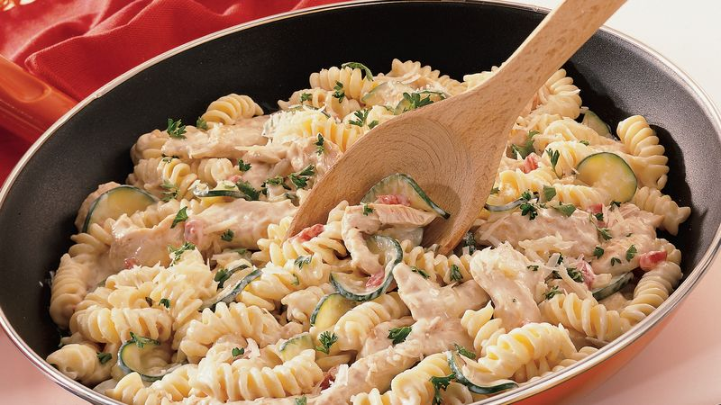

Chicken Alfredo

Rotini Chicken Alfredo
This rotini chicken alfredo recipe is a variation of the chicken pasta alfredo recipe.
This makes use of rotini pasta. These are corkscrew shaped or twisted pasta that are made of wheat flour.
Ingrediants
- 2 Cups uncooked Rotini Pasta (6 oz)
- 1 Tablespoon of Olive Oil
- 1 Small Onion, chopped
- 2 Chicken breasts
- 1 Jar of Alfredo sauce
- 1 Cup of Parmesan Cheese
Steps
- Cook rotini to desired doneness as directed on package. Drain; cover to keep warm.
- Meanwhile, in 12-inch skillet, heat oil over medium-high heat until hot. Add chicken; cook and stir 8 to 10 minutes or until no longer pink in center. Remove chicken from skillet; cover to keep warm.
- Reduce heat to medium. To same skillet, add zucchini, onion and garlic; cook and stir 4 to 5 minutes or until zucchini is crisp-tender. Add cooked chicken and Alfredo sauce; mix well. Place half of mixture (about 2 1/4 cups) in storage container with lid; cover and label "for Cheesy Chicken Alfredo Pizza". Refrigerate up to 2 days.
- To remaining mixture in skillet, add cooked rotini and pimientos; cook and stir just until hot (do not boil). Sprinkle with Parmesan cheese and parsley.
Home